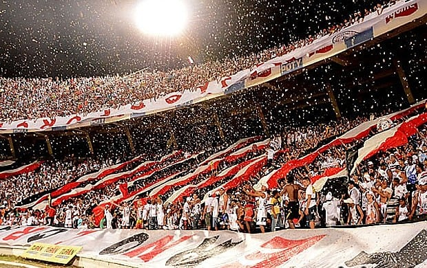
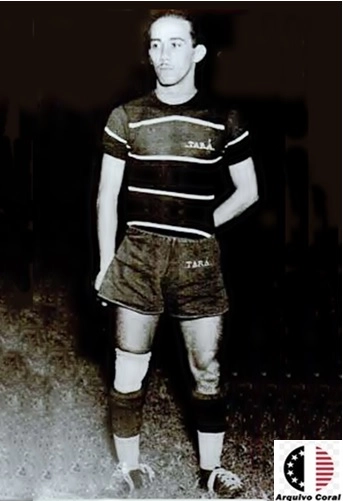
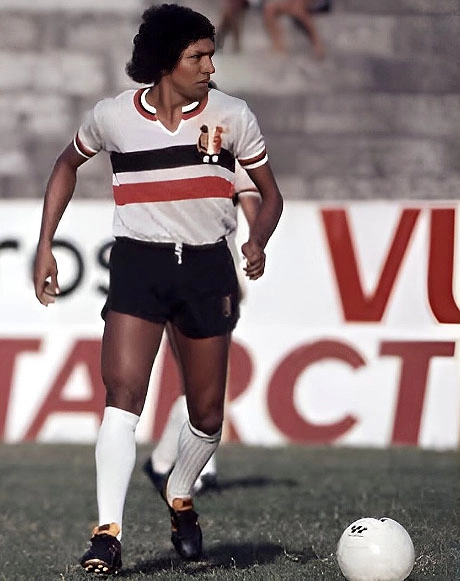
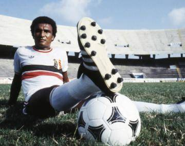
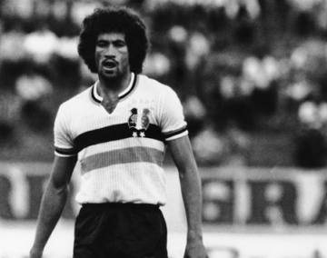
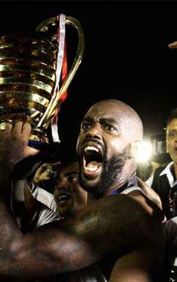
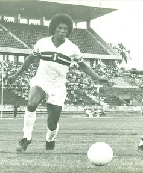
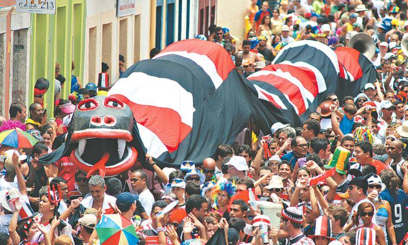

Mais que um clube — uma religião pernambucana. Conheça toda a trajetória do Santa Cruz Futebol Clube, o Mais Querido do Nordeste.
Conhecer a históriaO Santa Cruz Futebol Clube foi fundado em 3 de fevereiro de 1914, na cidade do Recife, em Pernambuco. Tudo começou no Pátio do Livramento, em frente à Igreja do Santíssimo Sacramento da Santa Cruz, onde um grupo de meninos costumava jogar bola. Inspirados pela igreja, decidiram criar um clube e batizá-lo com o mesmo nome.
O primeiro presidente foi José Vasconcelos do Rego Maciel, com apenas 12 anos de idade. Inicialmente o clube usava uniformes diversos, até consolidar suas cores oficiais: vermelho, preto e branco — o tricolor que se tornaria sagrado para milhões de torcedores.
Nos primeiros anos, o Santa Cruz enfrentou times amadores do Recife, mudou de campo várias vezes e se filiou à Liga Sportiva Pernambucana. Em 1931, conquistou seu primeiro Campeonato Pernambucano, marcando o início de uma trajetória vitoriosa. Já em 30 de janeiro de 1919, o Tricolor havia feito história ao vencer o Botafogo (RJ) por 3×2 — a primeira vitória de um clube nordestino sobre um time do eixo Rio-São Paulo.
Em 1947, o clube adquiriu o terreno no bairro do Arruda, onde construiria, com o esforço dos próprios sócios e torcedores, o Estádio José do Rego Maciel — o lendário Arruda, inaugurado oficialmente em sua forma monumental em 23 de janeiro de 1972. Tornou-se o maior estádio privado do Brasil.
A década de 1970 foi marcante: bicampeonatos, o artilheiro Ramon sagrado melhor do Brasil de 1973, grandes campanhas no Brasileirão e, em 29 de julho de 1979, o Santa Cruz fez história ao receber 80.157 pagantes no Arruda contra o Ceará — o maior público pagante de um jogo entre clubes da história do futebol brasileiro em estádio privado.
Em 2016, o Tricolor conquistou seu maior título regional: a Copa do Nordeste, vencendo o Campinense na final. Apesar das oscilações esportivas nos anos seguintes, com passagens por todas as divisões do futebol brasileiro, a paixão da torcida nunca esmoreceu — o Arruda continua sendo um dos estádios mais bem frequentados do país.
Hoje, mais de 110 anos depois de sua fundação, o Santa Cruz segue em reconstrução, focado na base e na gestão, sempre amparado pelo amor incondicional da Torcida Coral, considerada uma das maiores e mais apaixonadas do Brasil.
O vermelho, o preto e o branco formam a identidade visual do Santa Cruz desde os primeiros anos do clube. Cada cor representa a essência da Cobra Coral:
Em 3 de fevereiro, nasce o Santa Cruz Foot-Ball Club, no centro do Recife.
Santa Cruz 3×2 Botafogo — a primeira vitória de um clube nordestino sobre um time do eixo Rio-São Paulo.
O clube conquista seu primeiro título estadual oficial, com Tará como protagonista.
Compra do terreno onde nasceria o maior estádio privado do Brasil.
Quatro títulos estaduais consecutivos — era de ouro do Tricolor.
O caldeirão coral é entregue à torcida em sua forma monumental.
Com 21 gols, Ramon se torna o primeiro nordestino artilheiro do Campeonato Brasileiro, superando Pelé (18 gols).
80.157 pagantes no Arruda contra o Ceará — recorde brasileiro entre clubes em estádio privado.
Mais uma era de domínio estadual, com grandes ídolos da história do clube.
O Tricolor retorna à elite do futebol brasileiro.
Três estaduais consecutivos e o título nacional da Série C em 2013, com acesso à Série B.
Maior título regional da história do clube, conquistado sobre o Campinense. Grafite um dos heróis.
Mesmo nas divisões de acesso, a torcida continua provando que o amor pela Cobra Coral é eterno.

Junta mais essa vitória, Santa Cruz! Santa Cruz! Ao teu passado de glória! És o querido do povo, O terror do Nordeste no gramado, Tuas vitórias de hoje Nos lembram vitórias do passado. Clube querido da multidão, Tu és o super campeão!— Hino da torcida
Um dos maiores vencedores do estado, incluindo 3 Supercampeonatos — único tri-supercampeão de PE.
Conquista histórica em 2016 sobre o Campinense.
Campeão em 2013, garantindo acesso à Série B.
Taça Hexagonal do Norte/Nordeste de 1967, reconhecida pela CBF.
Mais troféus estaduais na galeria coral.
Maior público pagante entre clubes em estádio privado do Brasil (1979).
Mais de 110 anos de história produziram craques que marcaram gerações de torcedores. Esses são os eternos ídolos do Santa Cruz:

Considerado por muitos o maior jogador da história de Pernambuco. Humberto de Azevedo Viana foi o protagonista dos primeiros títulos do clube. Pioneiro e símbolo da era áurea dos anos 30.

O jogador com mais partidas na história do clube — 599 jogos. Conquistou 8 títulos estaduais com a camisa coral e chegou à Seleção Brasileira em 1976. Como técnico, ainda ganhou mais um estadual pelo Santa, em 2005.

Cria da casa e maior artilheiro do século XX no clube. Em 1973, foi o artilheiro do Campeonato Brasileiro com 21 gols — o primeiro nordestino a conquistar a artilharia nacional, superando Pelé. Esteve nos 40 pré-selecionados para a Copa de 1974.

João Batista Nunes passou pelo Santa Cruz antes de se tornar ídolo no Flamengo, sendo campeão da Libertadores e do Mundial de 1981. Pelo Tricolor, é o maior artilheiro em Campeonatos Brasileiros (43 gols em 72 jogos) e foi artilheiro do estadual de 1977, com 23 gols.

Sem nunca ter passado por uma base, Grafite chegou ao Santa Cruz como aposta e voltou duas vezes. Em sua terceira passagem, foi fundamental no acesso à Série A, na Série C e no bicampeonato estadual. Marcou 47 gols no total pelo clube e nunca esqueceu as cores corais.

Convocado 13 vezes para a Seleção Brasileira, foi campeão do Torneio Bicentenário dos EUA em 1976 com a camisa do Santa Cruz. Considerado o maior lateral-esquerdo da história do clube e um dos mais votados na Seleção do Centenário coral.
Teste seu conhecimento sobre os ídolos e a história do Santa Cruz!
Localizado no bairro do Arruda, na zona norte do Recife, o Estádio José do Rego Maciel é o maior estádio privado do Brasil. Construído com o esforço de sócios e torcedores, foi inaugurado em sua forma definitiva em 23 de janeiro de 1972.
Com capacidade atual para cerca de 60.044 torcedores, o Arruda é considerado um dos caldeirões mais imponentes do futebol brasileiro. Em 1979, recebeu o maior público pagante da história entre dois clubes em estádio privado: 80.157 pessoas no clássico contra o Ceará.
O estádio é símbolo da força do Santa Cruz, palco de glórias inesquecíveis e do amor incondicional da Torcida Coral.
Escudo: traz a Cruz de Cristo ao centro, em referência à Igreja do Santíssimo Sacramento da Santa Cruz, no Pátio do Livramento — local de fundação do clube. As três faixas verticais nas cores vermelha, preta e branca representam a tradicional indumentária tricolor.
Mascote: a Cobra Coral — apelido carinhoso dado pela torcida, em referência à serpente venenosa típica do Nordeste, símbolo de força e perigo para os adversários.
Hino: composto por Lourival Oliveira, é um dos mais belos hinos do futebol brasileiro e ecoa pelo Arruda em todos os jogos, com a torcida cantando emocionada do começo ao fim.
Apelidos: Tricolor do Arruda, Cobra Coral, Mais Querido, Time do Povo.
Além do futebol, o Santa Cruz também marca presença na maior festa popular de Pernambuco: o Carnaval. Uma das maiores manifestações da paixão coral é a tradicional Troça Carnavalesca Mista Ofídica Etílica Erótica Minha Cobra, conhecida simplesmente como Minha Cobra.
Fundado em 2006, o bloco reúne milhares de tricolores pelas históricas ladeiras de Olinda, misturando futebol, frevo, cultura popular e a paixão pelo Santa Cruz Futebol Clube.
O desfile acontece tradicionalmente durante o Carnaval, levando uma enorme Cobra Coral pelas ruas da Cidade Alta. Torcedores vestidos de vermelho, preto e branco acompanham orquestras de frevo, bandeiras do clube e homenagens a ídolos que fizeram parte da história do Santa Cruz.
Com o passar dos anos, o Minha Cobra se tornou um dos blocos carnavalescos mais tradicionais ligados a um clube de futebol no Brasil, atraindo não apenas torcedores, mas também turistas e admiradores da cultura pernambucana.
Mais do que um bloco, o Minha Cobra representa a união entre o futebol e o Carnaval, duas paixões do povo pernambucano. Todos os anos, milhares de corais transformam as ladeiras de Olinda em um verdadeiro mar vermelho, preto e branco.

Ai que coisa linda, a Minha Cobra nas ladeiras de Olinda!— Grito tradicional da torcida coral